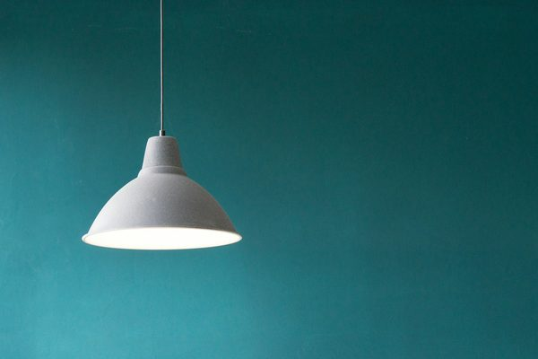

2026년 6월 말, 지역주택조합이 한국 주택 논쟁에서 가장 날카로운 단어가 됐다. 6월 25일 타운홀 미팅에서 이 문제가 화두에 오른 뒤, 국토교통부는 6월 말부터 618개 조합에 대한 전수 실태점검에 착수했고, 7월 11일 관계기관 합동 특별점검을 시작한다. 국토부는 제도 자체를 대대적으로 뜯어고치겠다고 예고했다.
왜 618곳인가, 왜 지금인가
지역주택조합은 예비 주택 수요자들이 돈을 모아 땅을 확보하고 시행사 없이 함께 집을 짓는 방식이다. 시세보다 싼 집이라는 약속이 있다. 그러나 현실은 반대인 경우가 많았다. 조합원이 수천만 원을 넣고도 토지 확보가 지지부진한 채 몇 년을 기다리고, 조합 집행부가 바뀌고, 사업비가 부풀어 오른다. 정부가 618곳을 한꺼번에 들여다보기로 한 것은, 이 문제를 더 이상 개별 분쟁의 나열이 아니라 제도 설계의 구조적 결함으로 본다는 신호다.

조합원의 시선: 투기가 아니라 살 집
지역주택조합을 '잘못된 투기'로 분류하기는 쉽다. 그러나 조합원의 자리에서 보면 그 틀은 핵심을 놓친다. 대다수는 이미 일반 시장에서 밀려났기 때문에 조합에 들어왔다. 두 번째 집을 노리는 것이 아니라 첫 집을 마련하려는 사람들이다. 점검이 사업을 멈추거나 청산으로 몰아갈 때, 헤드라인은 '비리 적발'이라 쓰지만 계약금을 넣은 가구에게는 '내 돈과 3년이 사라졌다'로 읽힌다. 조합원을 지키지 못한 채 제도만 지키는 개혁은 엉뚱한 문제를 푼 것이다.
업계의 시선: 토지 리스크가 늘 균열선이었다
실무자들은 오래전부터 치명적 약점이 사업 맨 앞단, 즉 토지에 있다고 말해 왔다. 조합은 필요한 부지의 일부만 확보한 채 조합원을 모집할 수 있고, 나머지는 몇 년에 걸쳐 사들인다. 그 과정에서 매도자가 뒤에 조합이 있다는 것을 알아채는 순간 땅값은 뛴다. 그 사이 벌어지는 자금 격차에서 대부분의 분쟁이 태어난다. 현장 관점에서 신뢰할 만한 개편이라면, 모집 전 토지 확보 요건을 높이고, 실제 확보 진행률의 공시를 강화하고, 조합원 분담금의 보관과 환불에 실질적 하한선을 두어야 한다. 그에 못 미치면 증상만 다듬고 균열선은 그대로 남는다.
"분쟁은 운영 실패처럼 보인다. 그러나 거의 언제나 한 가지로 귀결된다 — 충분한 땅을 확보하기 전에 조합원부터 모집한 사업."
그 뒤에는 더 큰 주택 의제가 있다
이번 점검은 홀로 있는 사건이 아니다. 정부는 세제 대책을 7월 중, 공급 확대 대책을 곧이어 내놓겠다고 예고했다. 함께 읽으면 수요를 누르고 공급을 넓히려는 주택 정책의 밑그림이 보인다. 지역주택조합은 그 경계에 어정쩡하게 걸쳐 있다. 이론상으로는 시민 주도의 공급 통로이지만, 그 실패가 다른 모든 공급 약속을 믿기 어렵게 만드는 바로 그 불신을 만들어 낸다. 정부가 이 작고 아픈 사례를 어떻게 고치느냐가, 대중이 더 큰 대책을 어떻게 받아들일지를 물들일 것이다.
편집장 코멘트
ARCHINODE는 이 사안을 정치 뉴스보다 수요 신호로 본다. 지역주택조합은 본질적으로 가격이 움직이는 건축, 즉 원가 관리로 사업의 생사가 갈리는 프로젝트다. 개편이 토지와 공시 규칙을 조이면, 살아남는 사업은 투명하고 검증 가능한 자재·마감 원가에서 더 치열하게 경쟁하게 된다. 그것이 자재 플랫폼이 설 수 있는 자리다 — 가장 싼 단가가 아니라, 증명할 수 있는 원가.